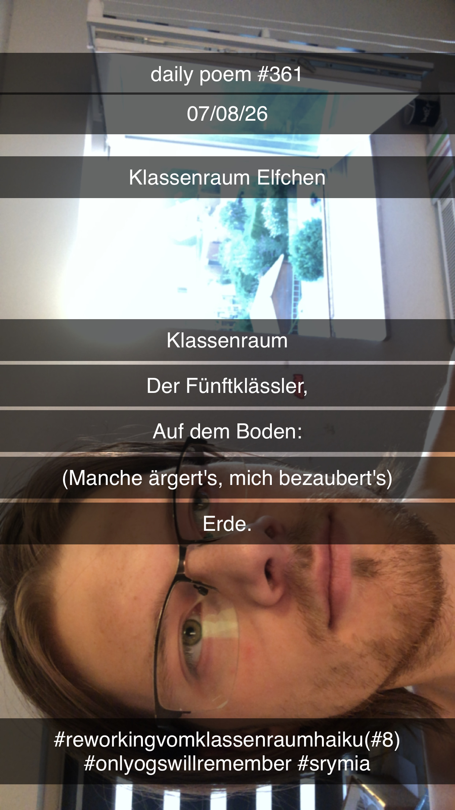

Klassenraum Elfchen
[361]Klassenraum
der Fünftklässler;
auf dem Boden:
– manche ärgert's, mich bezaubert's –
Erde.

Klassenraum
der Fünftklässler;
auf dem Boden:
– manche ärgert's, mich bezaubert's –
Erde.

Basiert auf derselben Idee wie: Klassenzimmer Haiku
Anmerkungen
kleines reworking vom klassenraum haiku (8)
so gefällts mir besser
edit:
hab das haiku nochmal umgeschrieben, jetzt liegt der fokus bei beiden komplett woanders, und ich mag beide gern